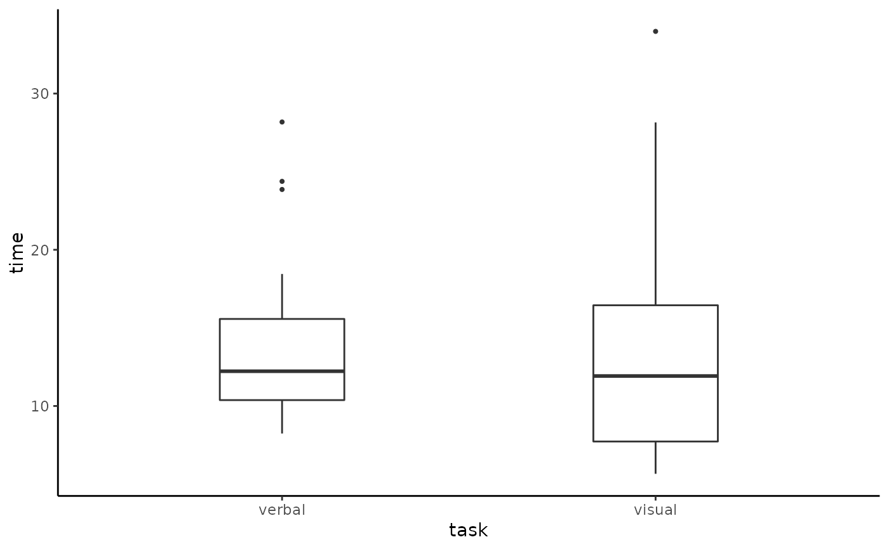
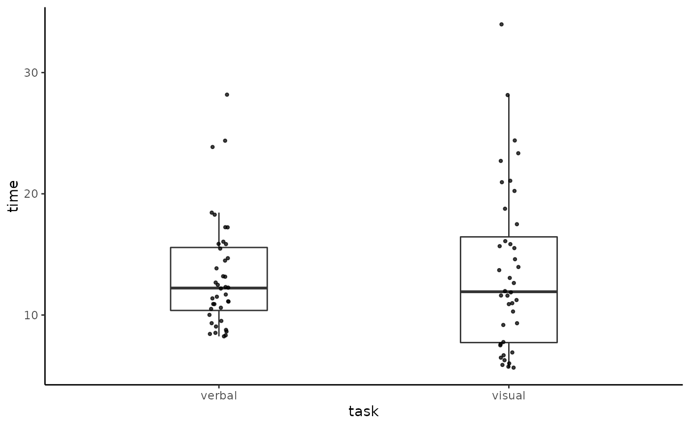
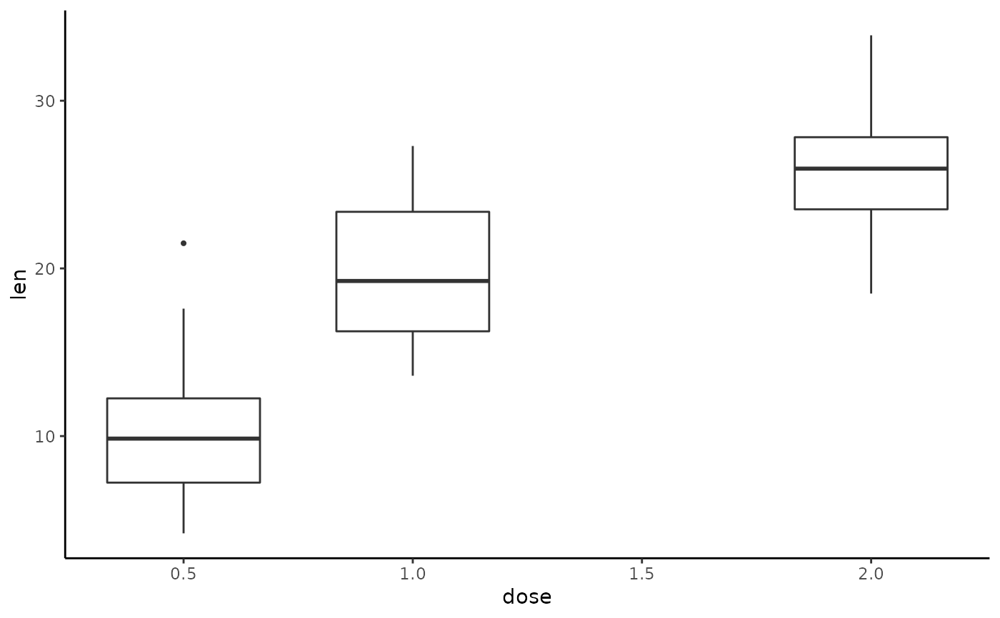
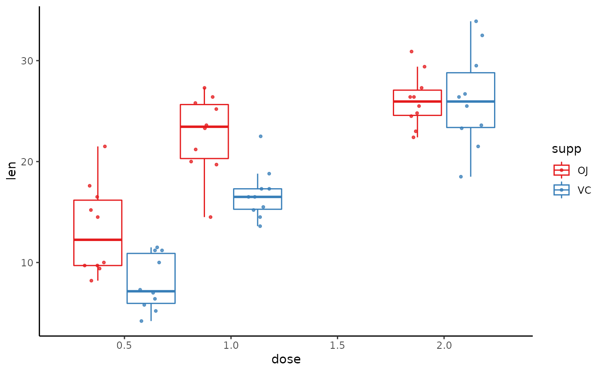

A Tukey box-and-whisker plot
tukeyboxplot.RdThis function is a wrapper around a typical ggplot based box-and-whisker
plot, i.e. using geom_boxplot, which implements the Tukey variant of the
box-and-whisker plot. The y variable is the outcome variable whose
distribution is represented by the box-and-whisker plot. If the x variable
is missing, then a single box-and-whisker plot using all values of y is
shown. If an x variable is used, this is used an the independent variable
and one box-and-whisker plot is provided for each set of y values that
correspond to each unique value of x. For this reason, x is usually a
categorical variable. If x is a continuous numeric variable, it ideally
should have relatively few unique values, so that each value of x
corresponds to a sufficiently large set of y values.
tukeyboxplot( y, x, data, by = NULL, jitter = FALSE, box_width = 1/3, jitter_width = 1/5 )
Arguments
| y | The outcome variable |
|---|---|
| x | The optional independent/predictor/grouping variable |
| data | The data frame with the |
| by | An optional variable, usually categorical (factor or character), by which the points in the box-and-whisker plots are grouped and coloured. |
| jitter | A logical variable, defaulting to |
| box_width | The width of box in each box-and-whisker plot. The default
used, |
| jitter_width | The width of the jitter relative to box width. For
example, set |
Value
A ggplot object, which may be modified with further ggplot2
commands.
Examples
# A single box-and-whisker plot tukeyboxplot(y = time, data = vizverb)# One box-and-whisker plot for each value of a categorical variable tukeyboxplot(y = time, x = task, data = vizverb)# Box-and-whisker plots with jitters tukeyboxplot(y = time, x = task, data = vizverb, jitter = TRUE)# `tukeyboxplot` can be used with a continuous numeric variable too tukeyboxplot(y = len, x = dose, data = ToothGrowth)tukeyboxplot(y = len, x = dose, data = ToothGrowth, by = supp, jitter = TRUE, box_width = 0.5, jitter_width = 1)